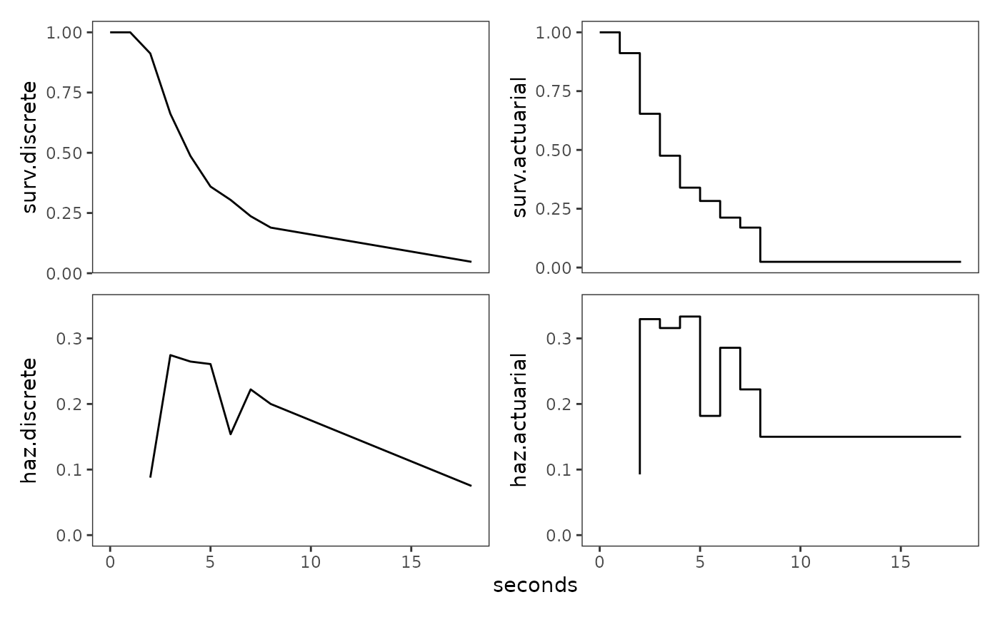

Chapter 13: Describing continuous-time event occurrence data
Source:vignettes/articles/chapter-13.Rmd
chapter-13.RmdThis chapter is under construction.
library(alda)
library(dplyr)
#>
#> Attaching package: 'dplyr'
#> The following objects are masked from 'package:stats':
#>
#> filter, lag
#> The following objects are masked from 'package:base':
#>
#> intersect, setdiff, setequal, union
library(tidyr)
library(purrr)
library(stringr)
library(ggplot2)
library(patchwork)
library(survival)
library(muhaz)
library(broom)13.2 Grouped Methods for Estimating Continuous-Time Survivor and Hazard Functions
Table 13.2, page 477:
# Adding discrete-time intervals
honking_discrete <- honking |>
mutate(
event = if_else(censor == 0, 1, 0),
time_interval = cut(seconds, breaks = c(1:8, 18), right = FALSE),
time_start = str_extract(time_interval, "[[:digit:]]+(?=,)"),
time_end = str_extract(time_interval, "(?<=,)[[:digit:]]+"),
across(c(time_start, time_end), as.numeric)
)
# Grouped life table
honking_grouped <- honking_discrete |>
group_by(time_interval, time_start, time_end) |>
summarise(
total = n(),
n_event = sum(event),
n_censor = sum(censor),
# All grouping needs to be dropped in order to calculate the number at risk
# correctly.
.groups = "drop"
) |>
mutate(n_risk = sum(total) - lag(cumsum(total), default = 0))
# The conditional probability can be estimated using the same discrete-time methods
# from the previous chapter, using the grouped data.
honking_grouped_fit <- glm(
cbind(n_event, n_risk - n_event) ~ 0 + time_interval,
family = binomial(link = "logit"),
data = honking_grouped
)
honking_grouped_fit |>
# .fitted is the conditional probability
broom::augment(newdata = honking_grouped, type.predict = "response") |>
mutate(
survival = cumprod(1 - .fitted),
hazard = .fitted / (time_end - time_start)
)
#> # A tibble: 8 × 10
#> time_interval time_start time_end total n_event n_censor n_risk .fitted
#> <fct> <dbl> <dbl> <int> <dbl> <dbl> <int> <dbl>
#> 1 [1,2) 1 2 6 5 1 57 0.0877
#> 2 [2,3) 2 3 17 14 3 51 0.275
#> 3 [3,4) 3 4 11 9 2 34 0.265
#> 4 [4,5) 4 5 10 6 4 23 0.261
#> 5 [5,6) 5 6 4 2 2 13 0.154
#> 6 [6,7) 6 7 4 2 2 9 0.222
#> 7 [7,8) 7 8 1 1 0 5 0.2
#> 8 [8,18) 8 18 4 3 1 4 0.75
#> # ℹ 2 more variables: survival <dbl>, hazard <dbl>
# Estimates by hand
honking_discrete_fit <- honking_grouped |>
mutate(
conditional_probability = n_event / n_risk,
discrete.s = cumprod(1 - conditional_probability),
discrete.h = conditional_probability / (time_end - time_start),
# The actuarial method redefines the number of individuals to be at risk of
# event occurrence for both the survival and hazard functions, and thus has
# different conditional probabilities from the discrete method.
n_risk.s = n_risk - (n_censor / 2),
conditional_probability.s = n_event / n_risk.s,
actuarial.s = cumprod(1 - conditional_probability.s),
n_risk.h = n_risk.s - (n_event / 2),
conditional_probability.h = n_event / n_risk.h,
actuarial.h = conditional_probability.h / (time_end - time_start)
) |>
select(
-c(conditional_probability.s, conditional_probability.h, n_risk.s, n_risk.h)
) |>
add_row(time_end = 0:1, discrete.s = 1, actuarial.s = 1)
honking_discrete_fit
#> # A tibble: 10 × 12
#> time_interval time_start time_end total n_event n_censor n_risk
#> <fct> <dbl> <dbl> <int> <dbl> <dbl> <int>
#> 1 [1,2) 1 2 6 5 1 57
#> 2 [2,3) 2 3 17 14 3 51
#> 3 [3,4) 3 4 11 9 2 34
#> 4 [4,5) 4 5 10 6 4 23
#> 5 [5,6) 5 6 4 2 2 13
#> 6 [6,7) 6 7 4 2 2 9
#> 7 [7,8) 7 8 1 1 0 5
#> 8 [8,18) 8 18 4 3 1 4
#> 9 NA NA 0 NA NA NA NA
#> 10 NA NA 1 NA NA NA NA
#> # ℹ 5 more variables: conditional_probability <dbl>, discrete.s <dbl>,
#> # discrete.h <dbl>, actuarial.s <dbl>, actuarial.h <dbl>Figure 13.1, page 479:
honking_discrete_fit |>
pivot_longer(
cols = c(discrete.h, discrete.s, actuarial.h, actuarial.s),
names_to = "estimate"
) |>
mutate(
estimate = factor(
estimate,
levels = c("discrete.s", "actuarial.s", "discrete.h", "actuarial.h")
)
) |>
ggplot(aes(x = time_end, y = value)) +
geom_line(data = \(x) filter(x, str_detect(estimate, "discrete"))) +
geom_step(
data = \(x) filter(x, str_detect(estimate, "actuarial")),
direction = "vh"
) +
scale_x_continuous(limits = c(0, 20)) +
facet_wrap(vars(estimate), scales = "free_y") +
ggh4x::facetted_pos_scales(
y = list(
str_detect(estimate, "s$") ~ scale_y_continuous(limits = c(0, 1)),
str_detect(estimate, "h$") ~
scale_y_continuous(limits = c(0, .35), breaks = seq(0, .35, by = .05))
)
)
13.3 The Kaplan-Meier Method of Estimating the Continuous-Time Survivor Function
Table 13.3, page 484:
honking_continuous_fit <- survfit(Surv(seconds, 1 - censor) ~ 1, data = honking)
honking_continuous_fit_tidy <- honking_continuous_fit |>
survfit0() |>
tidy() |>
select(-starts_with("conf")) |>
mutate(
# tidy() returns the standard error for the cumulative hazard, so we need to
# transform it into the standard error for the survival.
std.error = estimate * std.error,
conditional_probability = n.event / n.risk,
time_interval = 1:n(),
time_end = lead(time, default = Inf),
width = time_end - time,
hazard = conditional_probability / width
) |>
relocate(
time_interval,
time_start = time,
time_end,
n.risk:n.censor,
conditional_probability,
survival = estimate
)
honking_continuous_fit_tidy
#> # A tibble: 57 × 11
#> time_interval time_start time_end n.risk n.event n.censor
#> <int> <dbl> <dbl> <dbl> <dbl> <dbl>
#> 1 1 0 1.41 57 0 0
#> 2 2 1.41 1.51 57 1 1
#> 3 3 1.51 1.67 55 1 0
#> 4 4 1.67 1.68 54 1 0
#> 5 5 1.68 1.86 53 1 0
#> 6 6 1.86 2.12 52 1 0
#> 7 7 2.12 2.19 51 1 0
#> 8 8 2.19 2.36 50 1 0
#> 9 9 2.36 2.48 49 0 1
#> 10 10 2.48 2.5 48 1 0
#> # ℹ 47 more rows
#> # ℹ 5 more variables: conditional_probability <dbl>, survival <dbl>,
#> # std.error <dbl>, width <dbl>, hazard <dbl>Figure 13.2, page 485:
honking_continuous_fit_tidy |>
add_row(time_end = 0:1, survival = 1) |>
# The largest event time was censored, so we extend the last step out to that
# largest censored value rather than going to infinity.
mutate(time_end = if_else(time_end == Inf, time_start, time_end)) |>
ggplot() +
geom_step(
aes(x = time_end, y = survival, linetype = "1: Kaplan Meier"),
direction = "vh"
) +
geom_line(
aes(x = time_end, y = discrete.s, linetype = "2: Discrete-time"),
data = honking_discrete_fit
) +
geom_step(
aes(x = time_end, y = actuarial.s, linetype = "3: Actuarial"),
data = honking_discrete_fit,
direction = "vh"
) +
scale_x_continuous(limits = c(0, 20)) +
labs(x = "time")
13.4 The Cumulative Hazard Function
Figure 13.4, page 493:
honking_continuous_fit_tidy |>
mutate(time_end = if_else(time_end == Inf, time_start, time_end)) |>
ggplot(aes(x = time_end)) +
geom_step(
aes(y = -log(survival), linetype = "Negative log"),
direction = "vh"
) +
geom_step(
aes(y = cumsum(hazard * width), linetype = "Nelson-Aalen"),
direction = "vh"
)
#> Warning: Removed 1 row containing missing values or values outside the scale range
#> (`geom_step()`).
13.5 Kernel-Smoothed Estimates of the Hazard Function
Figure 13.5, page 496:
kernel_smoothed_hazards <- map_df(
set_names(1:3),
\(bandwidth) {
# muhaz() estimates the hazard function from right-censored data using
# kernel-based methods, using the vector of survival and event times.
kernel_smoothed_hazard <- muhaz(
honking$seconds,
1 - honking$censor,
# Narrow the temporal region the smoothed function describes, given the
# bandwidth and the minimum and maximum observed event times.
min.time = min(honking$seconds[honking$censor == 0]) + bandwidth,
max.time = max(honking$seconds[honking$censor == 0]) - bandwidth,
bw.grid = bandwidth,
bw.method = "global",
b.cor = "none",
kern = "epanechnikov"
)
tidy(kernel_smoothed_hazard)
},
.id = "bandwidth"
)
#> Warning in muhaz(honking$seconds, 1 - honking$censor, min.time = min(honking$seconds[honking$censor == : minimum time > minimum Survival Time
#> Warning in muhaz(honking$seconds, 1 - honking$censor, min.time = min(honking$seconds[honking$censor == : minimum time > minimum Survival Time
#> Warning in muhaz(honking$seconds, 1 - honking$censor, min.time = min(honking$seconds[honking$censor == : minimum time > minimum Survival Time
ggplot(kernel_smoothed_hazards, aes(x = time, y = estimate)) +
geom_line() +
scale_x_continuous(limits = c(0, 20)) +
facet_wrap(vars(bandwidth), ncol = 1, labeller = label_both)
13.6 Developing an Intuition about Continuous-Time Survivor, Cumulative Hazard, and Kernel-Smoothed Hazard Functions
Figure 13.6, page 499:
# TODO: Check that models are correct, then tidy up code.
# Fit survival models
alcohol_relapse_fit <- survfit(
Surv(weeks, 1 - censor) ~ 1, data = alcohol_relapse
)
judges_fit <- survfit(
Surv(tenure, dead) ~ 1, data = judges
)
first_depression_fit <- survfit(
Surv(age, 1 - censor) ~ 1, data = first_depression_2
)
health_workers_fit <- survfit(
Surv(weeks, 1 - censor) ~ 1, data = health_workers
)
# Tidy survival models
survival_models <- list(
alcohol_relapse = alcohol_relapse_fit,
judges = judges_fit,
first_depression = first_depression_fit,
health_workers = health_workers_fit
)
survival_models_tidy <- map(
survival_models,
\(.x) {
.x |>
survfit0() |>
tidy() |>
mutate(cumulative_hazard = -log(estimate)) |>
select(time, survival = estimate, cumulative_hazard) |>
pivot_longer(
cols = c(survival, cumulative_hazard),
names_to = "statistic",
values_to = "estimate"
)
}
)
# Estimate and tidy smoothed hazards
kernel_smoothed_hazards_tidy <- pmap(
list(
list(
alcohol_relapse = alcohol_relapse$weeks,
judges = judges$tenure,
first_depression = first_depression_2$age,
health_workers = health_workers$weeks
),
list(
1 - alcohol_relapse$censor,
judges$dead,
1 - first_depression_2$censor,
1 - health_workers$censor
),
list(12, 5, 7, 7)
),
\(survival_time, event, bandwidth) {
kernel_smoothed_hazard <- muhaz(
survival_time,
event,
min.time = min(survival_time[1 - event == 0]) + bandwidth,
max.time = max(survival_time[1 - event == 0]) - bandwidth,
bw.grid = bandwidth,
bw.method = "global",
b.cor = "none",
kern = "epanechnikov"
)
kernel_smoothed_hazard |>
tidy() |>
mutate(statistic = "hazard")
}
)
#> Warning in muhaz(survival_time, event, min.time = min(survival_time[1 - : minimum time > minimum Survival Time
#> Warning in muhaz(survival_time, event, min.time = min(survival_time[1 - : minimum time > minimum Survival Time
#> Warning in muhaz(survival_time, event, min.time = min(survival_time[1 - : minimum time > minimum Survival Time
#> Warning in muhaz(survival_time, event, min.time = min(survival_time[1 - : minimum time > minimum Survival Time
# Combine estimates
estimates_tidy <- map2(
survival_models_tidy, kernel_smoothed_hazards_tidy,
\(.x, .y) {
bind_rows(.x, .y) |>
mutate(statistic = factor(
statistic, levels = c("survival", "cumulative_hazard", "hazard"))
)
}
)
plots <- map2(
estimates_tidy, names(estimates_tidy),
\(.x, .y) {
ggplot(.x, aes(x = time, y = estimate)) +
geom_step(data = \(.x) filter(.x, statistic != "hazard")) +
geom_line(data = \(.x) filter(.x, statistic == "hazard")) +
facet_wrap(vars(statistic), ncol = 1, scales = "free_y") +
labs(title = .y)
}
)
patchwork::wrap_plots(plots, ncol = 4)